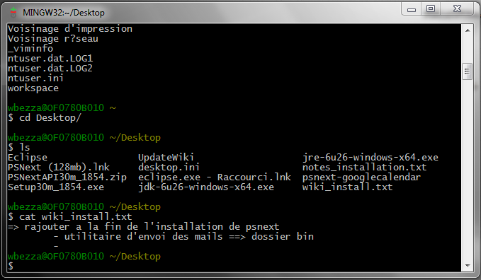

Git Bash
O Git Bash é uma ferramenta poderosa que facilita o gerenciamento de projetos versionados pelo Git. No ambiente de trabalho, dominar os comandos essenciais no Git Bash é fundamental para otimizar o fluxo de trabalho e colaboração.

Versionamento
O versionamento consiste em estratégias para gerenciar as diferentes versões de um código, de um sistema ou de um modelo. É uma forma de administrar as mudanças que são feitas e de garantir mais segurança na transição de uma versão para outra.